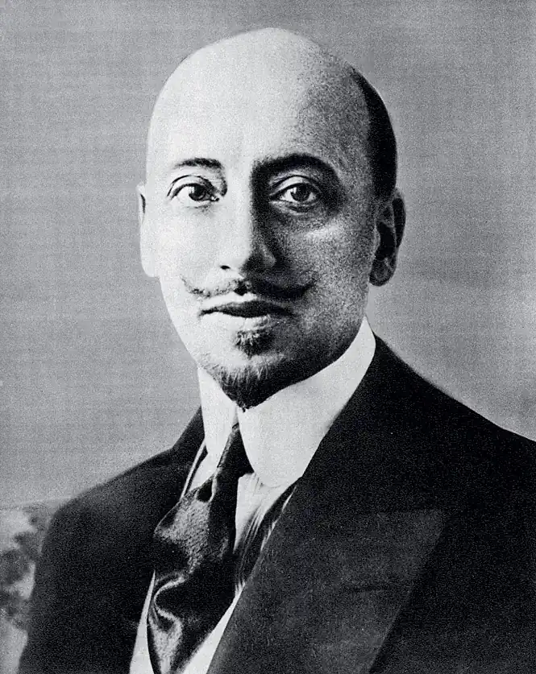
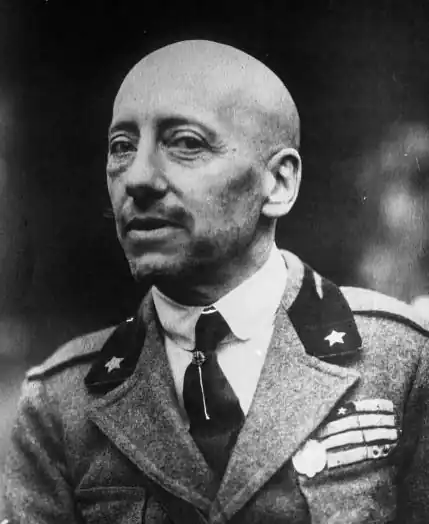
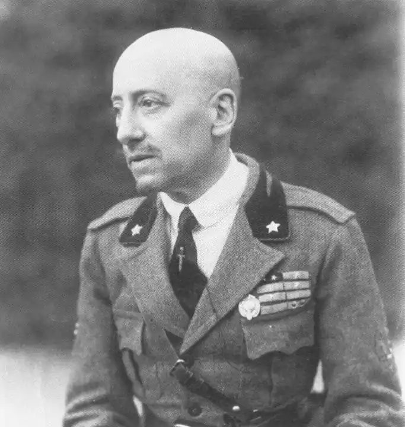
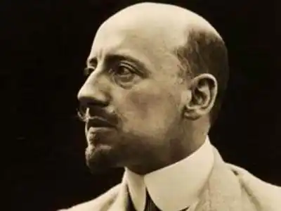

Д'АННУНЦІО, Ґабрієле (D'Annunzio, Gabriele — 12.03.1863, Пескара — 01.03. 1938, Гардоне-Рів'єра) — італійський письменник і політичний діяч.Народився в дрібнобуржуазній сім'ї. У 16 років видав першу поетичну збірку "Весна" ("Primo vere", 1879), в якій поєднав класицистичну традицію з натуралістичною технікою. У збірці відчутний вплив на Д'Аннунціо творчості Дж. Кардуччі.
Переїхавши в Рим, Д'Аннунціо зайнявся журналістикою. У 1882 р. вийшла друком його наступна поетична збірка "Нова пісня" ("Canto novo"), яка принесла її автору успіх. Поетичний образ у Д'Аннунціо вирізняється особливою пластичністю та мальовничістю.
У збірці оповідань і новел "Незаймана земля" ("Terra vergine", 1882) з'являються теми та персонажі, які зближують раннього Д'Аннунціо з веризмом: тема "маленької людини", опис побуту і життя простих людей, природи. Проте Д'Аннунціо трактує ці мотиви не з позиції реалізму. У людині він бачить і оспівує тваринні інстинкти; як і у французьких натуралістів, важливу роль у концепції особистості Д'Аннунціо відіграє біологічний фактор. Збірки новел "Книга незайманок" ("II libro delle Vergini", 1884) і "Сан Панталоне" ("San Pantalone", 1886), які увійшли згодом у книжку "Пескарські оповідання" ("Le novelle della Pescara", 1902), позначені посиленням декадентських тенденцій. Похмурий колорит новел, естетизація потворного, трактування особистості як осердя жорстоких, ірраціональних почуттів — усе це зближує Д'Аннунціо з традиціями європейського декадансу. Прикметно, що кумирами письменника в цей час стали Ш. Бодлер, М. Метерлінк, О. Вайльд. Вплив Ф. Достоєвського відчутний у поспішно-плутаній інтонації роману "Джованні Епіскопо" ("Giovanni Episcopo", 1892), головним героєм якого є "маленька людина", котра хоч і пригнічена життям, зневажена і покривджена, але не втратила здатності до співпереживання. Проте, на відміну від Достоєвського, Д'Аннунціо мотивує характер Джованні не соціальним буттям, а комплексом неповноцінності. У романі "Безневинний" ("L'irmocente", 1892) йдеться про вбивство головним героєм роману — гедоністом Туліо дитини своєї дружини; Туліо боїться, що дитина відбере в нього кохання Джуліани. Як і Раскольников, у фіналі роману Туліо приходить до самоосуду. Його аморальність і культ "вибраної особистості" виявились безпідставними. У цьому романі Д'Аннунціо ще близька натуралістична ідея біологічного фатуму, визнання першості жорстокої влади інстинктів над людиною. Проте незабаром письменник заявить про віджитість натуралізму, який не відповідає більше, на його думку, запитам і смакам нового покоління. У романах "Тріумф смерті" ("Trionfo della morte", 1894), "Діви скель" (1895), "Полум'я" ("II fuoco", 1900) і драмах "Мертве місто" ("La citta morta", 1898), "Джоконда" ("La Giaconda", 1899) Д'А. створив новий тип героя — естета-амораліста і "надлюдини" в дусі Ф. Ніцше. Для романів цього періоду характерні фрагментарність композиції, певна декларованість тону, схематизм образів; герої цих романів часто виступають у ролі резонерів, рупорів авторських ідей. Сильною стороною цих романів є виразні, сповнені ліризму пластичні описи природи, в яких відчувається поетичний талант Д'Аннунціо. Останній роман Д'Аннунціо "Можливо — так, можливо — ні" ("Force cje si forse che no", 1910) — розповідь про пілота, котрий рветься у смертельний політ. Естетизація техніки, оспівування "очищувальної" стихії війни зближують Д'Аннунціо з футуристом Ф. Т. Марінетті. У 1914—1915 pp. Д'Аннунціо виступив як прихильник вступу Італії у війну (зб. промов і статей "За велику Італію" — "Per la рій grande Italia", 1915). У роки війни письменник командував ескадрильєю літаків-бомбардувальників. У 1919 р. він очолив загін добровольців, який всупереч мирному договорові захопив далматинське місто Рієку (Фіум). "Фіумська авантюра" зробила Д'Аннунціо надзвичайно популярним в націоналістичних колах. Письменник вітав фашистський переворот в Італії (1922), був одним із найближчих соратників Б. Муссоліні, котрий вшанував його князівським титулом. У 1937 р. Д'Аннунціо став президентом Італійської академії. В останній період творчості Д'Аннунціо звернувся до ліричної автобіографічної прози: "Ноктюрн" ("Notturno", 1921), "Сотні і сотні сторінок таємної книжки Ґабрієле Д'Аннунціо, котрий намагається вмерти"("Cento e cento e cento e cento pagine del libro segreto di Gabriele D'Annunzio tentato di morire", 1935). Під час італо-ефіопської війни 1935—1936 pp. Д'Аннунціо видав збірку промов і статей "Приймаю тебе, Африко" ("Teneo te, Africa", 1936), у якій виправдав італійську агресію проти Ефіопії.Окремі твори Д'Аннунціо були опубліковані в "Літературно-науковому віснику". Про творчість Д'Аннунціо писала Леся Українка. В. Триков